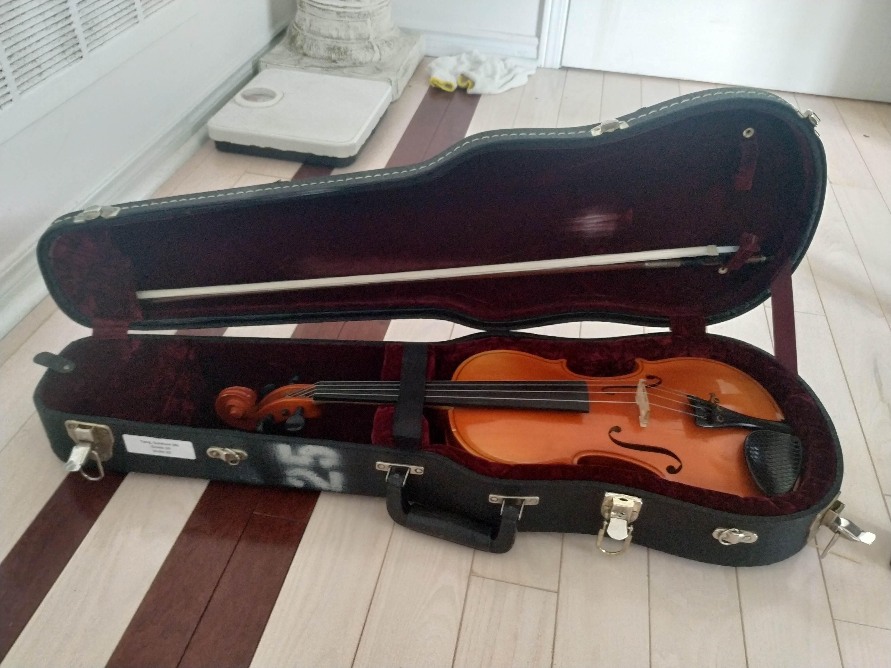
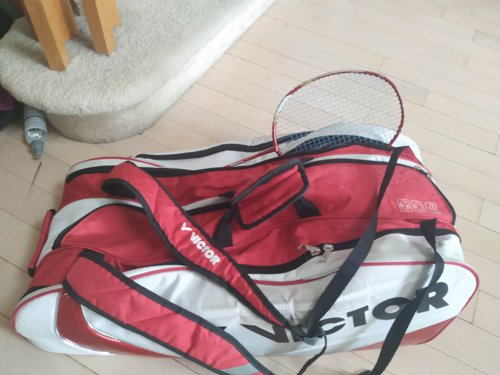

Coding
I have been starting to code ever since the start
of quarantine as I had a lot of free time on my
hands. I've been joining the app development club
using unity and computer science club in the Waterloo
CCC and CCO contest. I've also learned how to create
websites like these so then I can showcase my skills.

Violin
I started playing the violin when I was 9 years old and used to like
to play it for a little while before I started losing interest doing
private lessons. I quit for around a year and then in grade 9, I
started playing violin a lot and go to Markville Secondary School
Symphonic Strings

Badminton
This is a sport that I like to play. I started
playing when I was 10 years old and I used to not be very
interested in it. But as I got better,
it has become my favorite pass time.
Click more to see videos of me
playing.

Air Cadets 707 Marion
I also do air cadets as I like to have the opportunity
to lead other cadets to do things. I have learned
so much of how to be a good person by going to cadets.